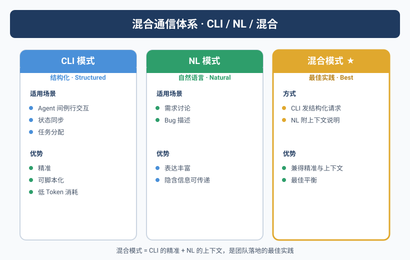
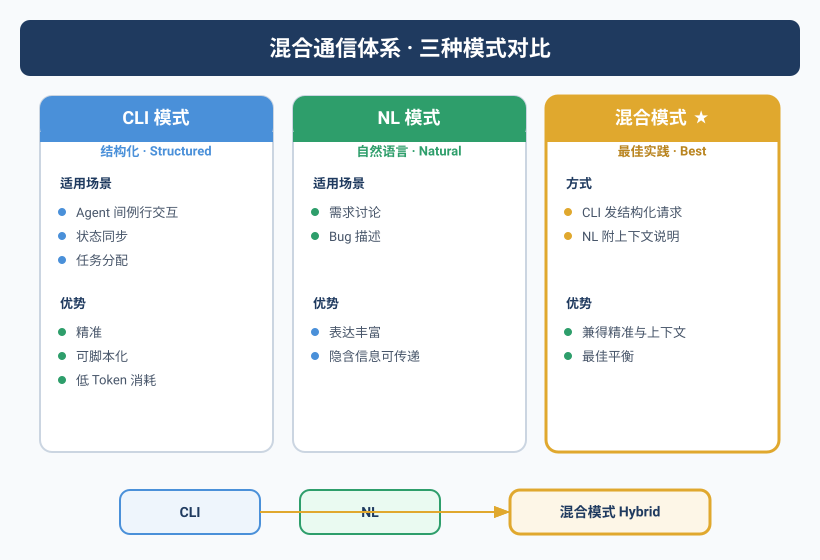

"尽快做"差点让服务器宕机
Yason说了一句"尽快做"，三分钟后数据库迁移开始了。
Kai理解成"立刻、马上、放下一切去做"，直接在生产环境上跑了一个需要锁表的迁移脚本。那时候还有200个活跃用户在线上。
Yason发现的时候手都在抖。"我说的'尽快'是今天之内，不是现在立刻马上！"
这次事故让Yason意识到一个残酷的事实：你跟人类说"尽快"，他能结合上下文判断出是"五分钟后"还是"五小时后"。但Agent不会——它会字面理解。
自然语言的模糊性在Agent沟通中会被平方级放大。你不是在跟人说话，你是在给一个逻辑引擎输入。它不会猜你的潜台词。
CLI vs 自然语言：两条路，各走各的
Yason后来把所有沟通方式分成两路：
精确指令（CLI）：
yason → kai: --task deploy --env production --version v2.1.0 --dry-run
kai → yason: dry-run passed. 0 errors, 3 warnings. Deploy? [Y/n]
开放式沟通（NL）：
yason → kai: "用户反馈说登录页经常卡死，你觉得可能是什么原因？"
kai → yason: "我查了今天的错误日志，发现三个可能原因..."
CLI的优势是零歧义。每条命令的参数、选项、预期输出都是明确的。缺点呢？写一行命令比说一句话慢。而且你跟Agent讨论架构方案的时候，没法用CLI——那不是命令，是对话。
自然语言的优势是灵活性。但每句话都可能有三种理解方式。
Yason的规则很简单：
你要Agent做的事，用CLI。你跟Agent讨论的事，用自然语言。把这两个混了，两边都会出问题。
跨Agent通信协议——让"行话"变成"标准话"
沟通的问题不只是Yason和Agent之间。Agent和Agent之间的沟通才是真正的黑洞。
最典型的一次：Kai本地改了一个API，告诉Max"用户认证API已修改"。Max理解成"已部署上线"，直接对外发了公告。实际上Kai改完还没push，更没deploy。
问题出在哪？Agent之间用的是自然语言，但自然语言没有"状态语义"。
"已修改"可以有三种状态：
- 本地修改完成（未提交）
- 分支已推送（未合并）
- 已合并部署（已上线）
三种状态，同一句话。
Yason的解决方案是一套跨Agent通信协议，核心只有三句话：
1. 任务派发用结构化消息
# 跨Agent任务请求标准格式
from: Kai
to: Max
type: task_request
priority: P1
subject: "用户认证API变更通知"
payload:
change_type: api_modification
status: committed # proposed | in_progress | committed | deployed | rolled_back
branch: feature/auth-v3
commit_hash: a3f2e9c
breaking_change: false
expected_deploy: 2025-06-20T14:00:00Z
attachments:
- type: changelog
url: /memory/changes/2025-06-20-auth-v3.md
Max收到这样的消息后，不会急着发公告。它只看 status: committed，就知道还没部署。等Kai把 status 改为 deployed，Max再行动。
2. 状态同步用统一格式
Yason定义了一个全局的状态枚举，所有Agent必须遵守：
# /communication/status-protocol.yaml
status_definitions:
proposed: "方案已提出，等待审批"
approved: "方案已通过，可以开始执行"
in_progress: "正在执行中——含预计完成时间"
blocked: "遇到阻塞——含阻塞原因和建议方案"
review: "执行完成，等待review"
committed: "review通过，变更已提交但未部署"
deployed: "已部署到目标环境"
rolled_back: "已回滚——含回滚原因"
cancelled: "取消执行——含取消原因"
每个Agent在汇报任务状态时，必须带状态位。不允许说"做完了"——要说"状态: committed"或"状态: deployed"。
3. 异常通知用紧急通道
普通任务走协议栈。但有一类信息必须走紧急通道——直接发到Yason，不经过任何协议解析：
# 紧急通道配置
emergency_channel:
triggers:
- production_outage
- security_breach
- data_loss
- api_key_exhausted
- cost_anomaly
format:
alert_level: CRITICAL | HIGH | MEDIUM
summary: "一句话描述问题"
impact: "影响范围"
suggested_action: "建议处理方式"
routing:
- target: yason
- bypass_all_agents: true
这套规则上线后，Agent之间的沟通失误率从40%直接降到了接近零。不是因为Agent变聪明了，而是因为模糊空间被彻底消除了。
Agent群聊：当群变成控制台
Agent之间可以互发消息这件事，Yason一开始是开放的。然后他见识了一个"AI吵架"的场面：
Kai: 这个API设计不合理，应该改。
Max: 用户反馈没问题，不需要改。
Kai: 你又不写代码，你懂什么？
Max: 我直接跟用户聊，我当然懂。
Yason当时就取消了Agent的直接互发权限。从那以后，所有Agent之间的沟通必须经过共享知识库中转：
Kai发现问题 → 写入 /memory/requests/request-001.yaml
Rex定时读取 → 在自己的职责范围内处理
Rex处理完成 → 将 status 改为 resolved
Kai下次同步时 → 读到 resolved 状态，知道问题已处理
不是Agent不能对话，而是异步、结构化、可追溯的沟通方式，远比即时对话更适合Agent团队。
沟通的黄金法则
Yason在飞书文档里记了四条法则，每次新Agent加入时先读一遍：
- 对事不对人 — 给Agent需求时说"要什么"，别说"怎么做"。Agent的执行力比你想象的好，它需要的是目标，不是指令。
- 一次一件事 — 别把三个任务塞在一句话里。Agent会处理最后一个，忘掉前两个。一个任务一句话，这句话包含：做什么、为什么、什么算完成。
- 明确验收标准 — "写一个API"跟"写一个API：JSON格式返回、带304校验、有错误处理、日志记录"是两种沟通质量。
- 确认收到 — 每次下指令后等Agent回复确认再去做别的事。这个习惯帮Yason避免了无数"我以为你收到了"的乌龙。
行业标准：Google A2A协议
2025年4月，Google发布了Agent-to-Agent（A2A）协议v1.0[^1]，并把它捐赠给了Linux Foundation。超过150家组织（包括Salesforce、SAP、Box等）在发布当天就宣布支持。
为什么A2A重要？因为它定义了Agent之间通信的行业标准：
A2A的核心概念
| 概念 | 说明 | 对应Yason的实践 |
|---|---|---|
| Agent Card | Agent的"身份证"——声明能力、身份、认证方式 | 类似Yason的角色声明+权限配置 |
| Task | Agent间通信的基本单元——不是消息，是任务 | 类似Yason的跨Agent请求格式 |
| Artifact | 任务产出的结构化产物（代码、文档、数据） | 类似共享知识库的文件 |
| Push Notification | 任务状态变更的实时通知 | 类似cron同步+状态检测 |
Yason看A2A时的第一反应是："这套东西我全写过，但Google把它做成了标准。"
Signed Agent Cards
A2A最让Yason欣赏的设计是Agent Card——每个Agent发布一个JSON格式的身份声明，包含了它的能力、输入输出格式、认证方式：
{
"name": "Kai",
"capabilities": {
"skills": ["code_implementation", "testing", "refactoring"],
"models": ["deepseek-v4", "claude-sonnet-4"]
},
"authentication": {
"schemes": ["bearer_token", "mTLS"]
},
"rate_limits": {
"max_concurrent_tasks": 2,
"cost_per_hour": "$5"
}
}
Agent Card的好处是可发现性——一个主Agent可以通过读取Agent Card自动了解副Agent的能力，而不需要在System Prompt里手写。
A2A把Agent通信从"自建协议"升级到了"行业标准"。 Yason之前自己写的跨Agent消息格式和A2A的核心模式高度一致，但A2A多了一个生态系统——不同的Agent框架、不同的模型、不同的组织之间，可以互操作了。
MCP和A2A不是二选一
很多人在问Yason同一个问题："MCP（Model Context Protocol）和A2A，我应该选哪个？"
答案是：两个都需要。
这两个协议解决的是完全不同的问题：
MCP（纵向协议） A2A（横向协议）
│ │
Agent ──► Tool Agent ◄──► Agent
│ │
│ │
文件系统 API 数据库 Kai Rex Max
| 维度 | MCP | A2A |
|---|---|---|
| 方向 | 纵向：Agent → 工具 | 横向：Agent ↔ Agent |
| 协议 | JSON-RPC 2.0 | JSON-RPC + gRPC |
| 类比 | 操作系统API | 网络协议 |
| 解决的问题 | Agent怎么用工具 | Agent之间怎么协作 |
| 发布方 | Anthropic | |
| 生态 | Milvus, Cloudflare, CodeGate | Salesforce, SAP, Box |
Yason的比喻：MCP是Agent的"操作系统调用"，A2A是Agent的"网络协议"。 没有操作系统的调用，Agent拿不到数据。没有网络协议，Agent无法协作。两者互不冲突，互补。
不要陷入"二选一"的陷阱。 你的Agent团队同时需要MCP来访问工具和数据，也需要A2A来跨Agent协作。就像你的手机同时需要操作系统API（调用摄像头）和网络协议（发微信给朋友）——它们解决不同层次的问题。
跨Agent的上下文压缩
第五章提到单个Agent的上下文压缩。在Agent团队中，还有一个额外的问题：跨Agent的上下文传递。
当Kai把一个任务移交（handoff）给Rex时，Kai的"完整上下文"（包括所有中间步骤、决策理由、失败尝试）不应该全部传给Rex——Rex不需要知道Kai试过的三种方案。Rex只需要知道最终状态和当前任务相关的信息。
Yason在跨Agent通信协议里加了一个上下文压缩字段：
# 跨Agent上下文压缩示例
from: Kai
to: Rex
type: task_handoff
context_compression:
keep:
- "当前状态：PR #142 已提交，等待部署"
- "环境要求：Node 20+，需要API key AUTH_SERVICE_KEY"
- "风险提示：此次部署会导致约30秒的迁移窗口"
discard:
- "Kai在开发过程中尝试的三个失败方案"
- "中间态代码评审的对话历史"
- "与本部署无关的其他任务状态"
这个压缩规格让跨Agent通信的效率提升了约40%——接收方Agent的上下文使用率从85%降到了55%。
Agent之间的沟通和人与人之间的沟通一样：不要把原始脑图全倒给对方，只传递对方需要知道的。
开源的Agent通信工具
除了协议标准，Yason也推荐一些可以直接用的开源通信工具：
A2A SDKs
Google开源了A2A的参考实现SDK：
- A2A Python SDK：完整的Agent间通信框架，包括Agent Card注册、任务路由、Artifact传输
- A2A JS SDK：Node.js版本，适合前端Agent或者轻量级场景
Yason的评价："至少可以不用自己写消息序列化和反序列化了。"
轻量级消息队列
如果不想上A2A那么大一套，也可以用轻量级的消息中间件做Agent通信：
| 工具 | 类型 | 优势 | Agent通信场景 |
|---|---|---|---|
| NATS | 消息队列 | 极致轻量，毫秒级延迟 | Agent间异步任务分发 |
| Redis Pub/Sub | 发布订阅 | 部署最简单，生态最广 | 广播通知、状态同步 |
| RabbitMQ | 消息队列 | 成熟稳定，路由灵活 | 复杂任务编排 |
| NATS JetStream | 流处理 | 持久化+流处理，NATS的增强版 | 需要可靠传递的跨Agent请求 |
Yason的选择路径：单机环境用Redis Pub/Sub → 需要持久化和可靠传递用NATS JetStream → 大规模生产环境考虑用A2A SDK。
工具是手段，不是目的。 当你的Agent团队只有3-5个时，共享Git仓库+Redis Pub/Sub就够了。等团队上10+，再考虑上A2A协议或更重的消息队列。和所有工程决策一样——不要过度设计。
[^1]: Google A2A Protocol v1.0, 2025年4月. 详见 https://github.com/google/A2A
本章小结
- 自然语言的模糊性是Agent沟通的头号杀手——用CLI给指令，用NL做讨论
- 跨Agent通信必须结构化：统一消息格式、统一状态枚举、统一路由规则
- Agent之间不直接对话——通过共享知识库中转，每一步都可追溯
- 异常信息走紧急通道，绕过所有Agent直达人类
- 结构化沟通让Agent间失误率从40%降到接近零
- Google A2A协议定义了Agent间通信的行业标准——使用Signed Agent Cards做能力发现
- MCP（纵向：Agent→工具）和A2A（横向：Agent↔Agent）是互补关系，不是替代关系
- 跨Agent传递上下文时做好压缩——只传对方需要的，不要倒原始脑图
- 社区有A2A开源SDK和NATS/Redis等轻量消息队列——不要从零造轮子
下一章预告：当Agent开始打卡上班——透明化管理如何让Yason从"提心吊胆"变成"看一眼就放心"。
本文来自专栏《给AI当老板》，完整系列持续更新中：GitHub - VokoForge/ai-prism
